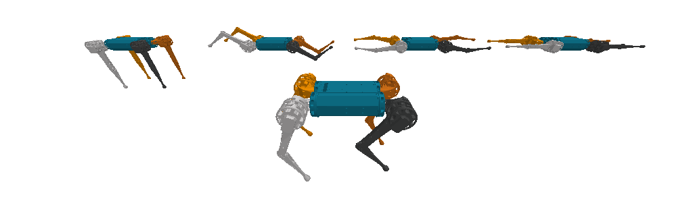
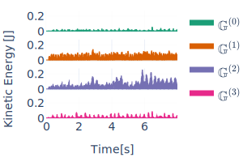

We introduce the use of harmonic analysis to decompose the state space of symmetric robotic
systems into orthogonal isotypic subspaces. These are lower-dimensional spaces that capture
distinct, symmetric, and synergistic motions. For linear dynamics, we characterize how this
decomposition leads to a subdivision of the dynamics into independent linear systems on each
subspace, a property we term dynamics harmonic analysis (DHA). To exploit this property, we use
Koopman operator theory to propose an equivariant deep-learning architecture that leverages the
properties of DHA to learn a global linear model of the system dynamics. Our architecture,
validated on synthetic systems and the dynamics of locomotion of a quadrupedal robot, exhibits
enhanced generalization, sample efficiency, and interpretability, with less trainable parameters
and computational costs.
Decomposing motions as superposition of simpler motions
This work presents a mechanism for decomposing and understanding the motions of any symmtric robotic
system as a superposition of simpler motions. This means, to take any trajectory of motion such as a
locomotion gait of a quaduped robot and decompose it as a superposition of lower-dimensional,
symmetric, and synergistic motions:

This property is related to the
symmetries of the robotic
system.
These are state transformation that results in another
functionally equivalent state under the governing dynamics. That is, identifying and controlling the
dynamics of a single state
suffices to capture and control the dynamics of all of the symmetric states:
Abstract Harmonics Analysis
Additionally, the symmetries of a robotic system allow us to decompose any motion as a superposition of
simpler symetric synergistic
motions, each evoling in a lower-dimensional space, called isotypic subspace.
By projecting entire motion's trajectories into these spaces, we can characterize each motion
as the superposition of lower-dimensional and synergistic motions.

Next to each animation we plot the kinetic energy of each of the configurations on an isotypic
subspace (i.e., the kinetic energy of each background robot). This allows us to quantify how relevant
each subspace is
for the generation of the motion of interest. For instance, for this trotting gait, we can clearly
identify that the dynamics evolve primarily in the second and third isotypic subspaces. That is,
in a 6-dimensional subspace, instead of the 12-dimensional joint-space.
This decomposition is achieved by applying the appropiate change of basis to the state space of our
system.
With the use of abstract harmonic analysis, we can analytically compute this change of basis
and apply it globally for any symmetric robotic system.
For instance, the following is a decomposition of recorded motion trajectories from the mini-cheetah
quadruped robot featuring different gait types and terrains: